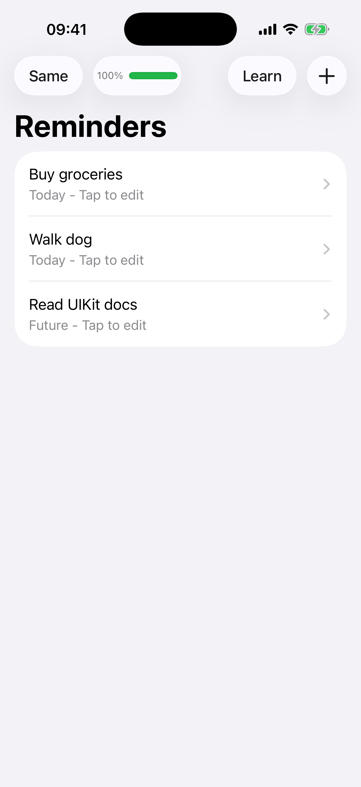
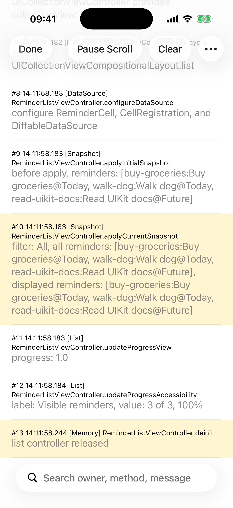
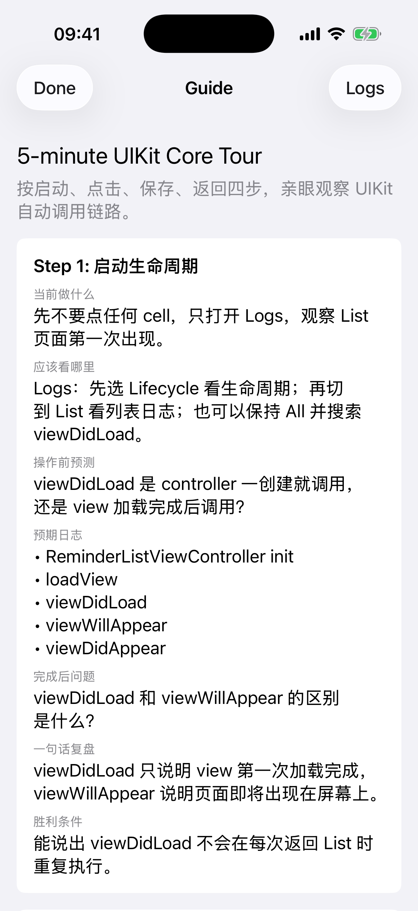

先预测一次回调，
再追到是谁触发它。
一台给 UIKit 初学者的生命周期显微镜：在 Guide 里预测，在真实界面里操作，再用结构化 Logs、Call Stack 和 UI Test 区分框架回调与业务数据流。
A public UIKit learning lab that makes lifecycle callbacks, delegate routing, target-action, closures, diffable snapshots, and call stacks observable.
- Guided learning9个引导步骤source count
- Observability14类结构化日志source count
- UI test2 / 2核心用户流程simulator
- Mechanisms4种调用机制trace
System
从可见操作，还原 UIKit 调用链。
Guide 负责建立预测，运行时日志保存证据；两者共同服务于理解，不替学习者自动宣称掌握。
一次只观察一个核心问题
每一步给出当前操作、观察位置、预测问题、预期日志、理解题和胜利条件。先作答，再进入真实界面验证。
日志要能回到 owner 与触发方
同一事件进入 App 内 Logs 与 Xcode Console；断点和 Call Stack 区分 UIKit 框架回调、delegate、target-action 与业务 closure。
Real simulator output
不是网页概念稿，是可运行界面。
三张真实 Simulator 截图分别承担操作、观察与学习引导，不使用商业客户端素材。



Log category explorer
搜索 14 类观察信号。
14 / 14 categories
One save, four mechanisms
一次保存，穿过四种调用机制。
它们出现在同一流程里，但 owner、触发方和适用场景不同。
- didSelectItemAt
- viewDidLoad
- saveReminder
- onSave
- snapshot
Delegate 报告用户选择，UIKit 生命周期准备页面，target-action 触发保存，业务 closure 回传结果，diffable snapshot 刷新列表。
Evidence, not claims
页面与 App 共用发布门禁。
展示页上的数量从当前 Swift 源码核对，并与构建、UI 流程和公开信息扫描一起验证。
- Appxcodebuild
PR 与 main 都执行 generic iOS Simulator 构建，防止展示页和真实项目脱节。
- UI2 / 2
编辑并保存、打开 Logs 与 Guide 两条流程在真实 iPhone Simulator 上验证。
- Sourceaudit
9 个 GuidedStep、14 个日志类别和 2 条 UI Test 都从当前 Swift 源码核对。
- Publicscan
本地路径、凭证特征、内部标识、页面资源和 Action SHA 固定均自动审计。
Evidence reviewed from public source and iPhone Simulator tests.
Run locally
5 分钟开始第一次预测。
需要 macOS、Xcode 和 iOS 17+ Simulator。项目使用纯 UIKit、纯代码页面，不依赖网络或第三方业务库。
git clone https://github.com/estelledc/UIKitLifecycleDemo.git
cd UIKitLifecycleDemo
make build
make run
# 验证两条核心 UI 流程
make test-uiPublic boundary
刻意不做什么。
它不是生产级提醒事项 App，不包含网络、持久化、EventKit 或真实业务状态。Guide 描述预期观察但不伪造日志；两条 UI Test 不代表完整回归；仅仅阅读或运行 Demo 也不等于已经掌握 UIKit。